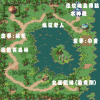

【村長送信任務三城人物所在地】
Map 1、Map 2 來源遊戲基地精華區及玩家提供 來源遊戲基地精華區及玩家提供 來源遊戲基地精華區及玩家提供 |
【官方版本三大村莊及城市地圖】
點此觀看 點此觀看 點此觀看 點此觀看 點此觀看 點此觀看 |
【一般地圖】
   
   
   
   
   
   
 |
【迷宮洞窟】


【其他區地圖】
   
   
|
圖由官方提供，敗家一族補充，要轉載請來信說明，若位置有缺或要提供的請跟站長說一聲
Map 1、Map 2 來源遊戲基地精華區及玩家提供 來源遊戲基地精華區及玩家提供 來源遊戲基地精華區及玩家提供 |
點此觀看 點此觀看 點此觀看 點此觀看 點此觀看 點此觀看 |
|

|
|
|